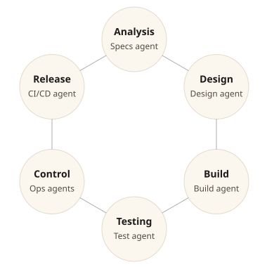

Project goals
Ensure autonomous actions only occur when context is complete, risk is understood, and authority is explicit.
Governed autonomy
Agents act within policy, approvals, and deterministic state transitions.
Human authority
Humans remain the final arbiters through review, override, and ownership.
Traceability
Every decision and transition is auditable and replayable.
Benefits
Operate AI with the same rigor you expect from production systems while maintaining flexibility.
Policy enforcement
Calyx policies define approval requirements and risk tiers.
Deterministic execution
Same inputs, same context, same policy, same outcome.
Audit-ready
Capture approvals, transitions, and evidence for compliance reviews.
SDLC overview
Each SDLC phase has a dedicated agent, with MCP coordinating handoffs and governance.
SDLC agents
Cross-functional teams
Operate in each phase they own, from product to QA.
Agents act through MCP
For all project interactions, enforcing policy and auditability.
Manual & Automated
Both human and AI-driven actions are governed by the same policies.

Control surfaces
CLI, UI, API
Tools for operators
Slack & Email approvals
Simple approval workflows.
Git PRs
Events that trigger workflows.
Direct repo edits
Manual changes trigger policy evaluation.
Usage scenarios
Two ways Anthesis operates in practice, with humans always in control.
Engineer-driven SDLC
Sequential, policy-gated runs led by humans.
- An engineer triggers agents in sequence for requirements, build, and testing.
- Each phase generates a proposal at risk thresholds, then resumes after approval.
Automated repo monitoring
Event-driven orchestration with approvals on demand.
- A repo event (commit or PR update) triggers a policy-evaluated workflow.
- MCP assembles context, classifies risk, and queues actions until approvals are granted.
Approvals and governance
Approvals are explicit, recorded, and tied to policy versions.
Approval surfaces
CLI, Slack, email, and Git-based review channels authorize proposals with traceable identities.
Policy gating
Calyx enforces risk tiers and required approvers.
Audit metadata
Decisions bind to commits, timestamps, policy versions, and scope.
Evidence trail
Logs, provenance, and trace IDs link decisions to outcomes.
Human-in-the-loop
Manual and autonomous workflows coexist without conflict.
Direct edits
Humans can edit the repository and trigger workflows via commits.
Overrides
Operators can override, halt, or replay any past execution.
Context curation
Approve or edit context artifacts and inputs.
Operational monitoring
Inspect logs, traces, and evidence before proceeding.
Transparent decisions
Every action is recorded with context and rationale.
Policy authoring
Define Calyx rules, risk tiers, and required approvers.
Collaborative reviews
Multiple approvers can review and sign off on proposals.
Post-hoc accountability
Audits, incident reviews, and retrospective sign-off.
System pillars
Three pillars define how Anthesis executes, interacts, and assures outcomes.
Execution core
Phloem MCP server
Orchestration + state machine.
Xylem dispatch fabric
Async execution + routing.
Automation + models
Runtime abstraction + workflows.
Interaction
Git repository
System of record.
Control surfaces
CLI / UI / API / chat.
Inflorescence
Multi-agent sequencing and handoffs.
Assurance
Observability
Logs, traces, and evidence export.
Provenance
Attribution for human and agent artifacts.
Audit trail
Immutable decision history.
Lifecycle
Every autonomous action follows a governed, auditable state machine.
Pre-Bloom
Record the triggering event, register the execution, and validate prerequisites.
Context Assembly
Gather RFCs, requirements, and artifacts, then bind them into a deterministic context snapshot.
Calyx Gate
Evaluate policy and Bloom Class risk, determine approval requirements, and block unsafe paths.
Approval
Capture explicit authorization, record audit metadata, and bind the decision to outputs.
Anthesis
Execute with full context, apply governed actions, and log structured outcomes.
Dormancy
Complete, roll back, or halt safely, preserving traceable outcomes and evidence.
Contributing and contact
Anthesis is under active development with RFC-driven architecture. Contributions are welcome.
Contribute
Open an issue or pull request in the private repository to propose improvements.
Contact
Reach out to the maintainers through Micrantha.
Governance
Review the RFCs in meristem/ to understand the living architecture.
FAQ
Common questions about Anthesis.
What is Anthesis?
Anthesis is a governed agentic SDLC system that ensures autonomous actions only occur when context is complete, risk is understood, and authority is explicit. By enforcing policy, approvals, and traceable state transitions, Anthesis enables teams to leverage AI-driven agents while still maintaining human work, oversight and accountability.
Can Anthesis support multi-repo projects?
Yes. MCP can coordinate events and approvals across repositories, while Git remains the source of truth for each repo.
Can SDLC phases run in parallel?
Yes. Anthesis supports parallel agent workflows with explicit coordination and policy gates to prevent unsafe overlap.